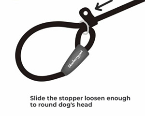
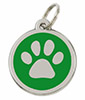
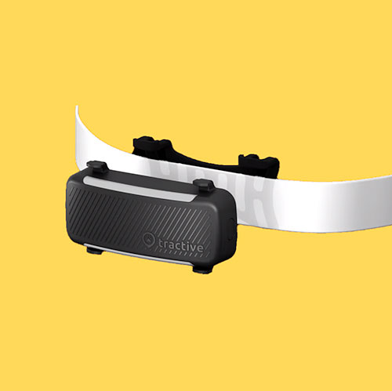
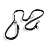
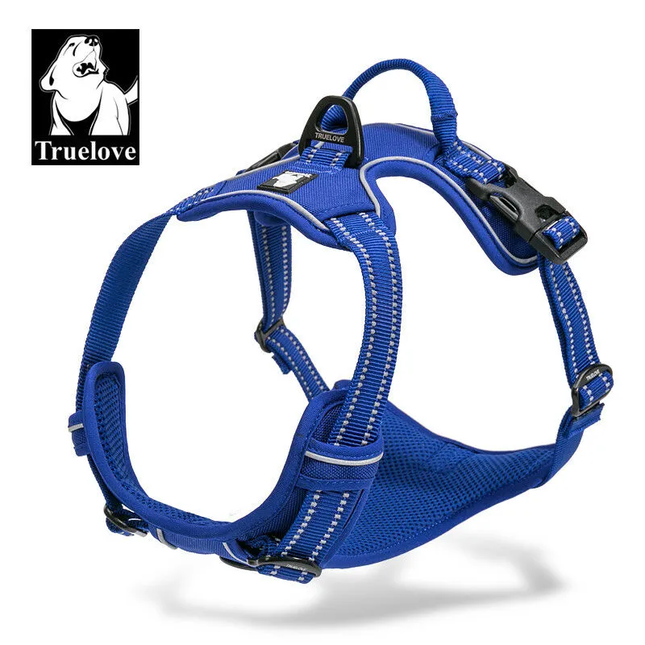
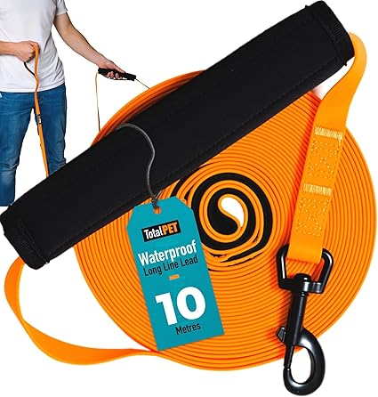
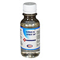
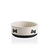

Preparation
Getting your home ready before arrival.
Get ready, they are on their way!
Dogs, and in particular ones with a difficult, abusive past and who have just experienced a long journey, may need to find and establish “safe zones”. During the first few days of decompression, they'll need somewhere they feel safe safe to rest and process what is going on.
Having a "special place" like a den of some sort is brilliant, but it all comes down to what the dog feels comfortable with. For instance, Rapunzel, one of our owner's dogs, sits under his desk if she is feeling anxious. She has decided that under the desk is her safe place, and it is where she will always head to if there is something causing her anxiety, like thunder or fireworks.
Crate training is popular in the U.K., sadly metal cages are the most common kind of crates used.
Please read our section on why we prohibit the use of crates and cages, or contact us to learn why they are not needed (with rare exceptions), how they can cause injuries to your dogs and some safe alternatives. However, the best way is their way because they know better than we do what safe means to them and where to find it. Just because we think they feel a certain way doesn't mean they do.
Safe Zones
Most dogs will have a few favourite spaces around the house. This could be their bed or crate, their favourite spot on the sofa, or the room they like most. Turn your dog's favourite spot into their designated safe space. You could add a comfy bed or blankets to their favourite nook, perhaps by the side of the sofa or under a certain table, to make it a safe and snug haven for them.
If your dog doesn't have a favourite spot already, choose somewhere in a room your dog normally spends time in, where they naturally like to rest. Make a cosy den for them and build up positive associations with the space.
See the Dog's Trust video for more inspiration:
Make sure all family members, especially children, know where your dog's den is, and to leave them alone when they're in it. Ask visitors not to disturb your dog when they're in this spot.
In The Home
Think about potential dangers in the home. If possible, move cables out of the way or cover them with a plastic sleeve to deter chewing. Look at using dog/stair gates to secure certain areas where you might not want your dog to wander.
Ensure that the rubbish bins are secure - these dogs are used to scavenging for food, they won't take long to find the bins. Are all your cleaning products safely out of the way? Have you made sure all your food is safely stored and not kept in a location that is accessable to the dog? Is your toilet paper stock out of reach?
When the front door is opened, how easy is it for the dog to get out? Think about using gates to create a zone that allows you to get in and close the front door before your dog can get out.
Take some time to wander about your home and see it through a dog's eyes, make it a safe and secure place for them to live.
Outside
Repeat the process outside, thinking of possible escape routes.
- Check for holes in fences and hedges.
- Are the fences and hedges high enough to prevent a determined escape artist from jumping over?
- How easy is it for them to dig under them?
- Is there anything that is next to the fence, wall or hedge that can be used as a step up to jump over - think about wheelie bins and storage boxes.
- Are any of the panels etc. loose to gates or perimeters?
Check over everything even after a home visit because a panel can come loose if for example someone has kicked a football against it post home check
Do you have any plants in your garden that might be poisonous to your dog? Think about how you can ensure your dog cannot get to them.
Talk to your neighbours, explain about your expected new arrival and their background. Let them know what to do if your dog does manage to get into their property (who to call, not to spook them, etc).
Equipment
All the things you will need.
Before the arrival of your rescue dog we would advise purchasing the following equipment:

Slip Lead
To assist the transfer of your dog on arrival, please have a slip lead available, as this reduces the chance of a stressed dog escaping during the transfer process.

Identity Tag
Please ensure that you have an identity tag with your details to put straight on to your dog upon arrival.

GPS Tracker
It is highly recommended that you look into getting a GPS tracker. Rescue dogs are well known escape artists!

Double Ended Training Lead
To allow for double point of contact.

Well Fitted Harness
There are several options available, we recommend Truelove No-Pull harnesses, adjusted correctly to your dog, of course.

Collar
A well fitting collar. If you choose a Truelove collar then it can match your harness.

Long Line
A 5m or 10m long training line, will give your dog freedom to explore without the worry of them running off. Perfect for teaching recall and loose lead walking. Caution must still be used to prevent injuries to dogs and humans.

Surgical Spirit
For cleaning up, just in case there are any accidents.

Porcelain Bowls
For inside and outside (water down at all times) and less noise than a disc hitting metal.